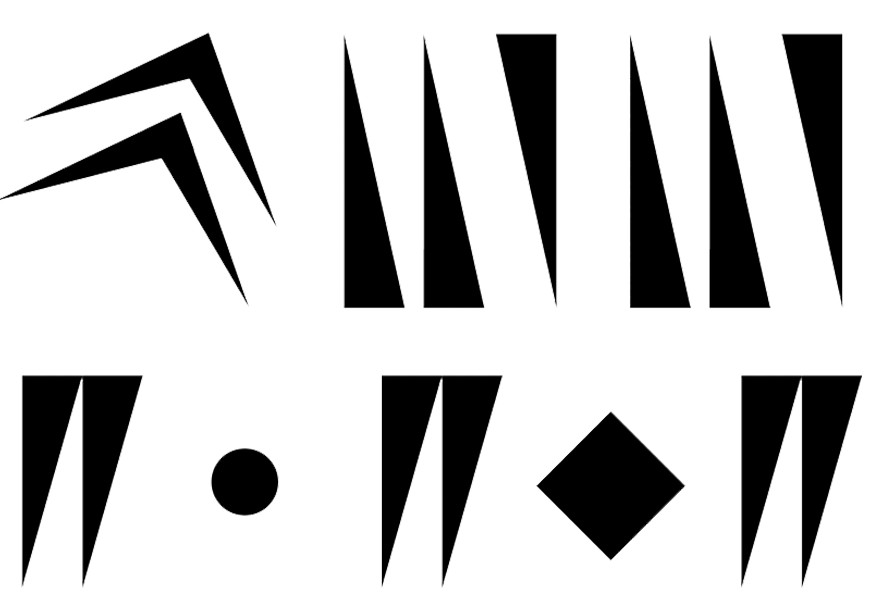

{ level design, UX/UI }
Missione Pietrarubbia

A collaborative video game for teams of middle school students, Missione Pietrarubbia was designed to be the
main experience for the SmART schooling project of the Arnaldo Pomodoro Foundation.
The students explore three fictional, psychedelic, sci-fi worlds inspired by the works and the life of Italian sculptor Arnaldo Pomodoro, trying to unlock objects that come from the personal archive of the artist.
The game was designed to be played in classrooms during the COVID-19 pandemic.
▶ What I did
I was in charge of the design of the levels (both experiential and visual), and the UX/UI design for the game interface.
A project by We Are Müesli.
Designed in 2022.